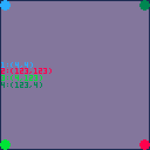

metatables og coroutines
1. November, 2019
tid

- pico-8 bruker et subsett av Lua
- tabeller til Lua er som lister til Lisp
- med tabeller lager vi andre datastrukturer(og objekter)
tabeller
local a_table = {}
local an_table = {1,2,3,4}
an_table[1] == 1 -- sant, i Lua starter indekser fra 1
an_table[-1] == nil -- sant
a_table.func = function(echo) return echo end
a_table.func == a_table["func"]
a_table:func() -- a_table.func(a_table)
local table_as_map = {key = "value"}
table_as_map.key == "value"metatable
indeks
eksempel
vec = {x = 0, y = 0}
function vec:new(x, y)
self.__index = self
return setmetatable({x=x, y=y}, vec)
end
function vec.__add(a, b)
if type(a) == "number" then
return vec:new(a + b.x, a + b.y)
end
if type(b) == "number" then
return vec:new(a.x + b, a.y + b)
end
return vec:new(a.x + b.x, a.y + b.y)
endcoroutines
